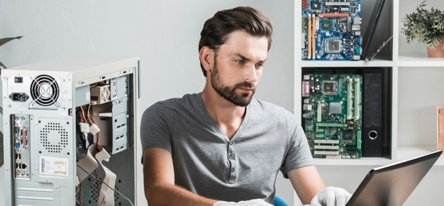
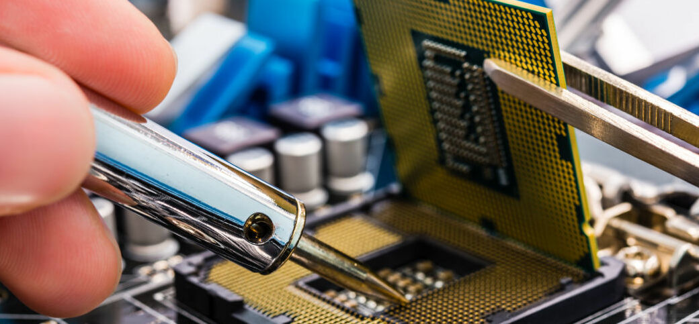
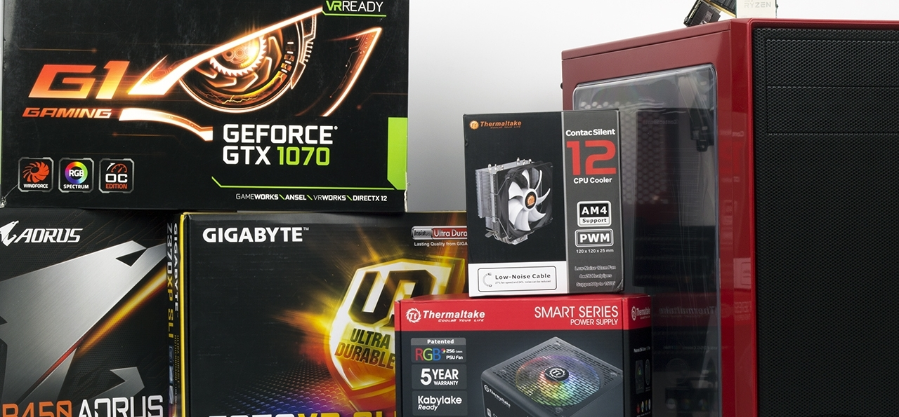
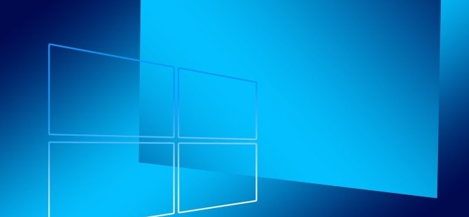

Ремонт ПК Киев. Ремонт компьютеров и ноутбуков
Наша компания предоставляет профессиональную и качественную помощь
Вашему компьютеру и ноутбуку в кратчайшие сроки. Мы осуществляем установку
программ и операционных систем: Windows, Linux, Mac OS, установку и настройку
Wi-Fi роутеров, и даже сложные ремонты ноутбуков.
Ремонт ПК Киев. Возможен срочный выезд мастера на дом в любой
район Киева. Выезд мастера для ремонта ПК — бесплатный! Ремонт
компьютеров помогает устранить все неполадки аппаратного и программного
обеспечения компьютеров. Компьютер станет быстрее работать, перестанет
зависать и выключатся. Мы занимаемся переустановкой Windows и прочих
программ, подборкой и установкой подходящих драйверов, настройкой
правильного обновления программного обеспечения.
Компьютерная помощь
Если компьютер не включается, сгорел шнур питания или деталь на
материнской плате компьютера, то наш мастер быстро и качественно
отремонтирует компьютер с выездом на дом. Не стоит паниковать при
поломке! Ремонт ПК Киев возможен в любом случае! Мы рекомендуем
проводить регулярную комплексную диагностику компьютера хотя бы
один раз в год. Это сможет предотвратить серьезную поломку Вашего ПК.
Диагностика может включать в себя также чистку компьютера от пыли, что в
будущем предотвратит перегрев и сгорание дорогостоящих деталей.
Если Вас беспокоит шум компьютера при роботе, то наш специалист сделает чистку
куллеров и заменит термопасту на процессоре, после чего Ваш компьютер будет работать
тихо и без сбоев.